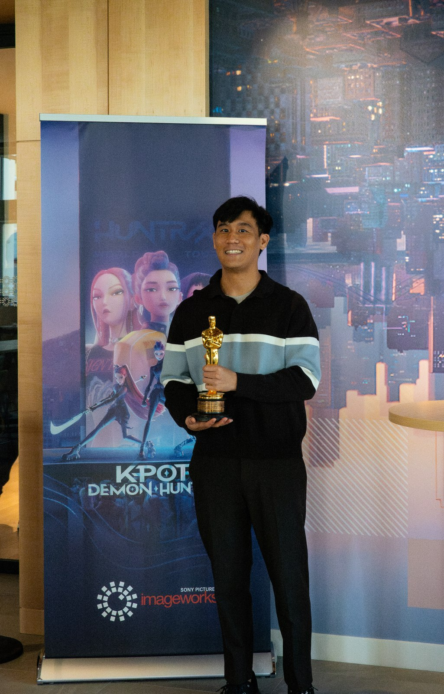

SELF

ABOUT — JAMES LIN
Hi, I'm James.
I'm an animator currently working at Sony Pictures Imageworks. I graduated from Sheridan College with a Bachelor's Degree in Animation, and over the past 5+ years I've worked on films including GOAT, K-pop: Demon Hunters, In Your Dreams, Spider-Man: Across the Spider-Verse, and The Sea Beast.
I work primarily in Maya and Blender, with Krita and Clip Studio Paint for drawing and painting. Outside of the studio I keep sketchbooks from life drawing sessions, shoot photography, and paint.